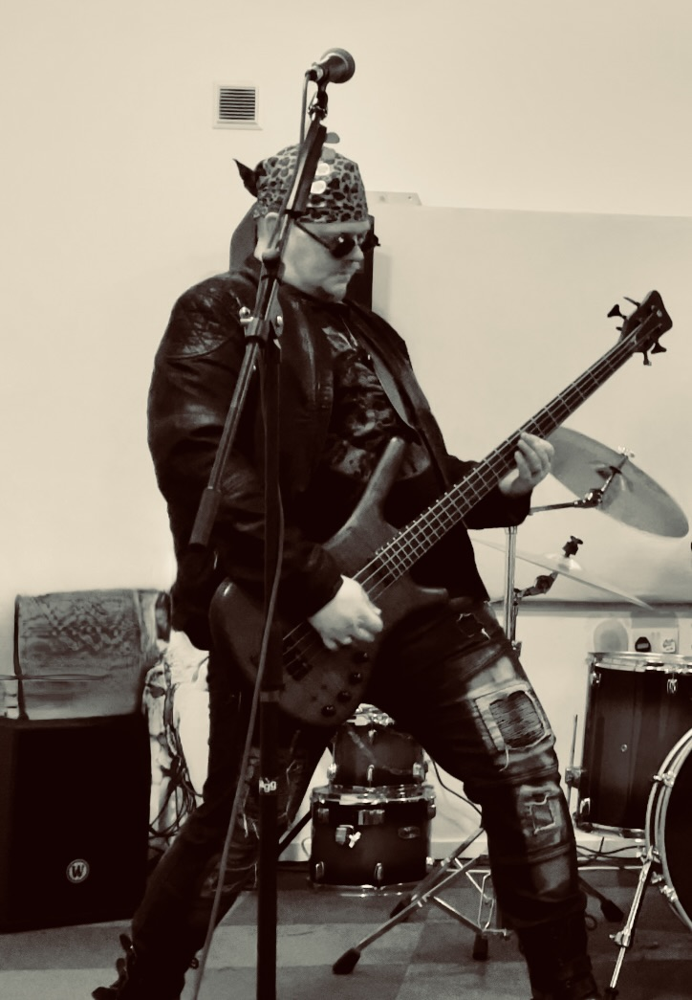
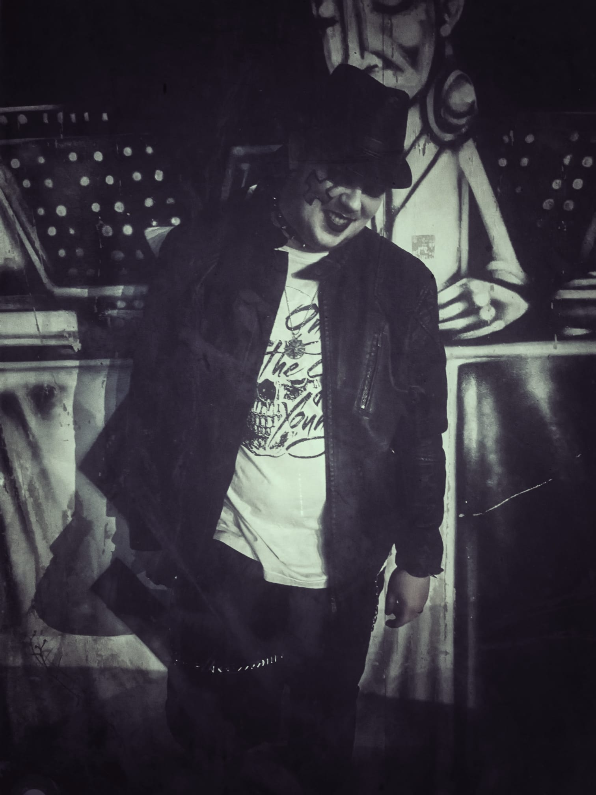
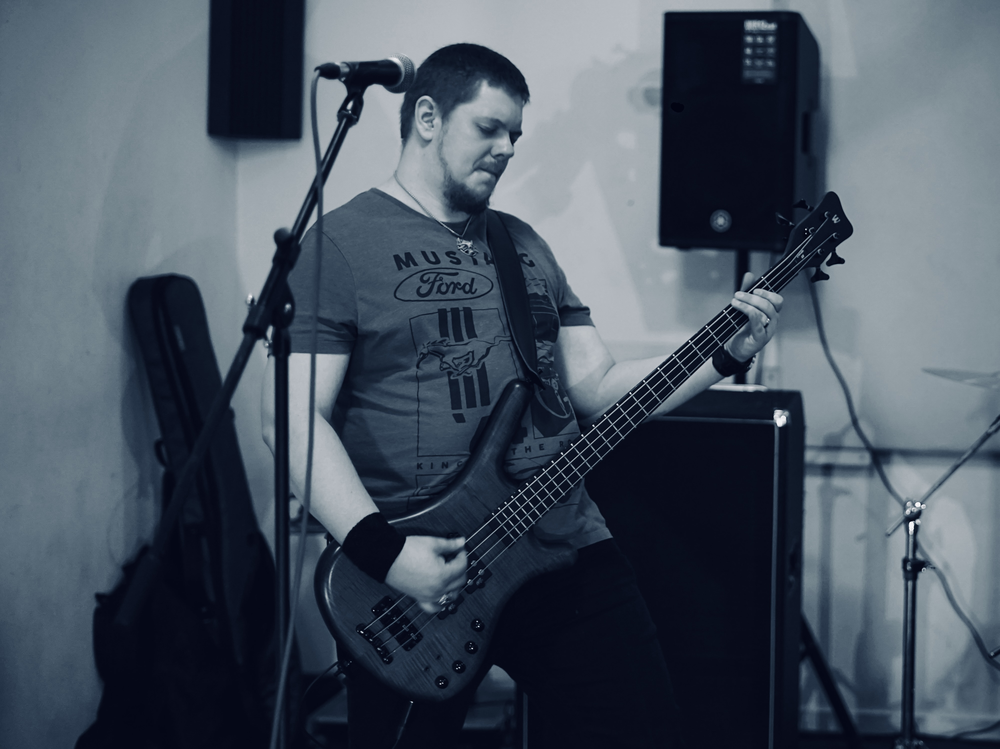
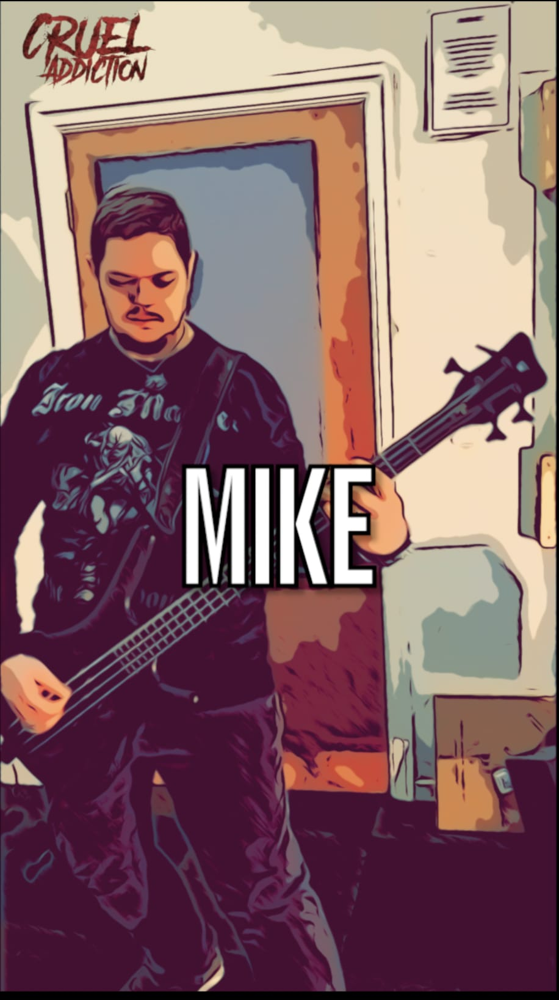

My name is Michal and I am 34 years old. I have started playing on bass guitar when I was 14. I didn't get to be in a band until I started to study at university in Bratislava, capital city of Slovakia.
My mum was never happy about me choosing the bass guitar as my first instrument. She plays acoustic guitar, but never been keen on any heavy music like me. Let me explain why I chose this instrument and what was and still is my drive to play on it daily.
You may or may not be aware, that the bass guitar is relatively new instrumnet. It was only invented in 1930s, mainly because the traditional double bass was too big and bulky to transport. The bass sound has been evolving since, with all sorts of effects. When I was 13, I was introduced to a symphonic metal band Nightwish. I was blown away by them, mainly how heavy their guitars did sound on their album.
I thought that I will learn guitar and get similar sound. After trying an electric guitar in a music shop I felt like this isn't what I hear. Fortunately enough, the shop assistant knew Nightwish, so when I asked about the heavy sound, he explained to me that this soul-fullfilling sound I am hearing is coming from a bass guitar. He briefly explained to me that this is achieved by additional effects in the chain and that Marko Hietala - new Nightwish bass player, uses guitar effects on his bass guitar. This has changed my opinion in an instant.

Marko Hietala, finish bass player and singer, has been my inspiration since. His amazing vocals inspired by Ronny James Dio and other talented metal singers were already enough for me to be hooked, however, the bass sound like no other, just sent shivers down my spine whenever I listened to Century Child album from Nightwish.
Once I had access to internet, I was on a mission to find out more about him. I have found what gear he uses to achieve his tone and since then, been hunting for Warwick basses and Sansamp distortions. Eventually I evolved and made my own tone that has similar effect in my ears, but I would never get into that if I didn't know about Marko.
To see my gear, please click on the link below:
My gear
The first band I have ever joined never really formed - it was meant to be a Red Hot Chilli Peppers tribute band. In fact, only two bands in my life managed to get me on stage. Most ended up in rehearsal rooms. Looking for the right people has been a difficult and very time consuming goal, but without them, like any other project, never gets to materialise.
My second attempt was joining Evergrey tribute band in Slovakia, Bratislava. We have managed to be an opening band for very popular at the time bunch called The Rasmus. This was an amazing experience, especially the fact that I could connect with them through Facebook after the show. I was let go the next day, unfortunately, because the guitarist's girlfriend also played bass and wanted to be part of the band.
Fast forward to 2020 - when I replied to an ad from a really talented guitarist. Without hearing any of his demos, we agreed to meet up for a jam along with a drummer, who also replied to his ad. The jam went well and after playing the classics from Black Sabbath and Ozzy Osbourne, we decided to form a band. Within a couple of months, guitarist's best friend - singer has joined us and we formed Doomer.
Unfortunately, we never managed to get a gig before the faith split us apart. The pandemic held us back a lot, despite that, we managed to compose a full album and a comic book as a booklet for it. We had big plans, but only managed to record 3 songs in a studio. Only 2 were released before we parted ways. It was a devastating April for me in 2022.
A new hope came when I applied for a bass player role in band called Cruel addiction. Have a listen...
To find out more, please click on the link below:
My band